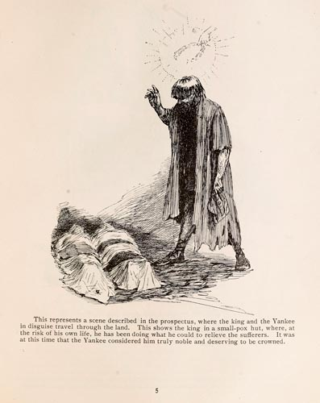

|  |
This represents a scene described in the prospectus, where the king and the Yankee in disguise travel through the land. This shows the king in a small-pox hut, where, at the risk of his own life, he was been doing what he could to relieve the sufferers. It was at this time that the Yankee considered him truly noble and deserving to be crowned. |